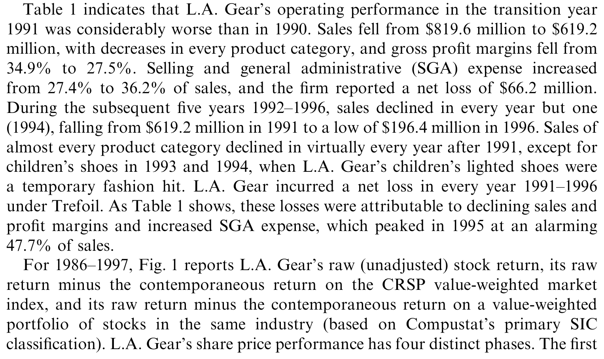
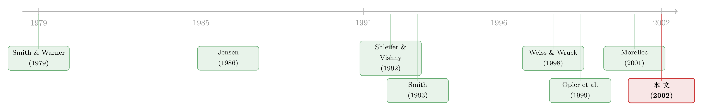

现金只有 330 万，却烧了六年：一家「明星公司」是怎样靠『卖家底』续命的
本文读的是 DeAngelo, DeAngelo & Wruck (2002, Journal of Financial Economics)：通过对 L.A. Gear 崩塌的逐年解剖，他们指出真正给困境企业管理层「续命空间」的，不是手头的现金，而是更广义的资产流动性——尤其是随增长机会萎缩而被释放出来的营运资本。这家公司开局只有 $3.3 million 现金，却以每年约 $36 million 的速度烧了六年，靠的正是不断变卖「家底」。
1 一个反常识的开场
先讲一个数字上的悖论。
1989 年，L.A. Gear 是纽交所表现最好的一只股票，权益市值接近 $10 亿。到 1998 年，它在破产程序里被判定为一文不值。这本身不稀奇——明星股陨落的故事，金融史上俯拾皆是。真正反常的是中间那段：从 1991 年到 1997 年，这家公司在长达六年的时间里，年年巨亏、营收断崖式下滑，却始终能按时付息、维持运转，直到最后才第一次付不出利息。
它是靠一大笔现金撑过来的吗？不是。L.A. Gear 进入 1991 年——也就是它麻烦缠身的第一年——账上只有 $3.3 million 现金。可它此后每年的现金「烧钱率」（burn rate）高达约 $36 million，1991–1996 年累计的现金盈利缺口达到 $215 million。而这六年里，它从外部一共只净融到了 $35 million 的新钱。
那么问题来了：一家只有三百多万现金的公司，是怎么补上一个一亿八千万美元的内部资金窟窿的？（这 $180 million 相当于它 1990 年底权益价值的 80%。）
这正是本文要回答的核心问题。而答案，会顺手把好几条公司金融的「常识」一并修正掉。
2 不是现金，是「卖得掉的家底」
我们先把镜头拉回到 Opler, Pinkowitz, Stulz & Williamson (1999) 那篇关于公司现金持有的经典研究。它的一个直觉是：企业之所以囤积现金，是为了在坏天气里有钱可烧、有底气熬过困境。换句话说，现金储备是困境中的缓冲垫。
L.A. Gear 偏偏是这个直觉的反例。它的缓冲垫几乎不存在（只有 $3.3 million），它能熬过六年，靠的根本不是现金。
那靠的是什么？作者给出的关键词是资产流动性（asset liquidity），而且特别强调一句——broadly construed, not limited to excess cash（广义理解，不限于多余现金）。
这里藏着本文最精巧的一个观察。L.A. Gear 曾经是一家高速成长的公司，营收从 1985 年的 $10.7 million 一路冲到 1990 年的 $819.6 million，年化增速 138%。高速成长意味着它必须囤积大量营运资本——存货、应收账款——来支撑销售。它独特的「即时下单」（"at once" ordering）销售模式更是逼它比同行持有更多的存货。
那么，当增长反转、营收开始萎缩时会发生什么？
被「困」在营运资本里的钱，开始一笔一笔地被释放出来。存货卖掉变现、应收收回、不必再为下一季的增长备货……增长机会的消失，反而源源不断地吐出现金。控股方 Trefoil 做的，正是用这些被清算出来的营运资本，去补贴公司持续的经营亏损。
于是逻辑链条就清楚了：不是公司有一座现金山可烧，而是它的资产结构高度流动，增长一旦掉头，家底就能被慢慢变卖来填亏损的窟窿。 这就是「资产流动性给了管理层经营自由裁量权」的真正含义。

Table 1: indicates that L.A. Gear’s operating performance in the transition year
如表 1 所示，这家公司的衰败是全方位的：营收从 1990 年的 $819.6 million 跌到 1996 年的 $196.4 million；毛利率从 1990 年的 34.9% 一路下滑到 1996 年的 24.0%；销售及管理费用率（SGA to sales）则从 27.4% 飙升到 1995 年触目惊心的 47.7%。净利润那一行，从 1991 年起就再没翻过正——-66.2、-71.9、-32.5、-22.2、-51.4、-61.7，单位都是百万美元。每一个数字都在恶化，可公司就是不倒。
3 一个自然的问题：那「纪律」去哪了？
读到这里，一个研究公司治理的人会立刻警觉：管理层拿着股东（和债权人）的钱，年复一年地往失败的战略里砸，这难道没人管吗？
这就接上了 Jensen (1986) 那条著名的论断。Jensen 的「自由现金流代理成本」（agency costs of free cash flow）理论说：债务是一剂良药，因为还本付息的现金压力会逼着管理层吐出闲钱、不敢乱花。负债越多，管理层挥霍的空间越小——这是债务的纪律效应。（关于这条主线本身，可参见《现金为什么一定要「还」出去？——四十年后，重读 Jensen 的自由现金流》与《债务这副药，为什么不能全吃？——重读 Jensen 和 Meckling 五十年》。）
可 L.A. Gear 的故事，给这条逻辑泼了盆冷水。
它确实在按时付息——付息的压力一直在。但付息压力并没有真正管住管理层：只要还能变卖营运资本来凑出利息和亏损补贴，付息这道「闸门」就形同虚设。Trefoil 麾下先后三套管理团队，男鞋、女鞋、童鞋之间反复横跳，渠道从高端百货倒向沃尔玛又倒回来，六年里换了 4 家广告代理商——本文作者读遍财经报道后的判断是：这是一套「踉跄的、失控的」（lurching, out-of-control）经营政策。付息的纪律，没拦住任何一次乱来。
那么，真正起作用的纪律是什么？
4 真正关键的一步：是契约，不是利息
这是全文最重要的反转。
作者的答案是：债务契约（debt covenants）有时比「必须付出现金利息」更能约束管理层的自由裁量权。
证据就藏在 L.A. Gear 与银行那条信贷额度（credit line）的拉锯里。早在 1990 年 12 月，公司刚和美洲银行（Bank of America）签下 $360 million 的信贷额度，额度里有一条契约：禁止亏损。结果 1991 年 1 月，公司报出第一笔季度亏损，立刻触发违约。银行先把额度砍到 $300 million，二季度再亏，又砍到 $200 million。
注意这里的机制：让管理层「坐不住」的，不是付不出利息（那时还远远付得出），而是一条会计指标（盈利）一旦越线就触发的契约。这恰好印证了 Smith (1993) 的预测——银行会设定、甚至反复重置很紧的契约条款，好让公司财务状况一有恶化就触发违约，银行借此一次次重新评估、重新谈判自己的风险敞口。
L.A. Gear 一生走过 14 份不同的信贷协议，总额度从 $360 million 被逐步压缩到 $25 million。每一次违约，都是银行重新「校准」风险的机会。这是一条远比付息压力更灵敏的纪律链条。
于是本文顺手回答了一个教科书常问、却少有人讲透的问题：为什么债务契约通常盯住的是「盈利」（earnings），而不是「现金流」（cash flow）？
答案就在 L.A. Gear 身上。如果契约盯的是现金流，那么一家像它这样靠清算营运资本来制造现金流的公司，完全可以在盈利能力早已崩坏的情况下，仍然「现金流达标」、把债权人蒙在鼓里。盈利指标更难被「变卖家底」这种动作粉饰，因此对债权人更有保护力。契约盯盈利，正是为了不被资产流动性「钻空子」。
5 顺带被修正的两条「常识」
把上面这条主线想透，另外两个流行说法也跟着松动了。
其一，现金不等于「负债务」。 在很多简化的财务直觉里，账上一块钱现金，约等于少借一块钱债——cash is negative debt。但 L.A. Gear 的经历说明二者并不对称：现金是管理层可以自由动用的资源，而债务（尤其是带紧契约的短期债务）则是债权人手里的监督工具。把现金当成「负债务」，等于抹掉了债权人那只盯着你的眼睛。Trefoil 的做法恰恰相反——它还清了带银行监督的银行债，转而发行没有契约的公开债（covenant-free public debt），把银行信贷额度几乎只用来支持给供应商的信用证。换句话说，它精心地降低了自己被监督的程度，同时保留了变卖营运资本来补贴亏损的能力。这一进一退，正说明现金与债务在治理含义上根本不是一枚硬币的两面。
其二，债务期限（debt maturity）很重要。 银行那条信贷额度之所以能当「纪律的缰绳」，关键在于它是短期、可反复重定价的——每次到期、每次违约，银行都能重新议价、收紧契约。而 Trefoil 发的公开债是长期、无契约的，发出去就管不着了。同样是「债」，期限不同，对管理层的约束天差地别。（关于债务期限本身如何被资产特性塑造，可参见《飞机要换，债也要「换」：把「期限匹配」拆回资本的年龄》。）
到这里，开篇那个悖论已经解开了：一家只有三百多万现金的公司能烧六年，是因为它家底厚、卖得动，而能让它烧得这么「从容」的，是它主动卸掉了真正能管住自己的那套短期、带契约的银行监督。资产流动性买来了时间，治理结构则决定了这段时间会被用来自救，还是被用来「踉跄地」试错。
别把本文读成「资产流动性是坏东西」。作者特别提醒：流动性本身是中性的。对 L.A. Gear 的股东，它带来了灾难；但若买来的时间被用于一次成功的转型，它就是福音。Shleifer & Vishny (1992) 早就指出，资产流动性能通过扩大债务容量带来好处。流动性是把双刃剑，落在谁手里、用来干什么，才是关键。
6 文献脉络
把这篇 2002 年的案例研究放回它所在的坐标系，能看得更清楚。
最上游是 Smith & Warner (1979) 对债券契约（bond covenants）的奠基性分析——债务合约里那些限制性条款，本就是为了管住借款人、保护债权人。沿着「债如何约束管理层」这条线往下，Easterbrook (1984) 和尤其是 Jensen (1986) 把它推向了「自由现金流纪律」的高峰：负债的还本付息压力，是治理管理层挥霍的良药。
但「债能管住人」靠的到底是付息压力，还是契约本身？这条岔路上，Smith (1993) 专门研究了基于会计指标的契约违约，指出银行会用很紧的契约条款来反复重估风险敞口——这正是本文 L.A. Gear 故事的理论预言。
另一条平行的线，关心的是资产而非现金流：Shleifer & Vishny (1992) 论证了清算价值与资产流动性如何撑起一家公司的债务容量；Opler et al. (1999) 则系统刻画了公司现金持有的动机与含义，提出现金储备是困境缓冲。再往后，Morellec (2001) 把资产流动性正式写进资本结构与担保债务的模型。

DeAngelo, DeAngelo & Wruck (2002) 站在这两条线的交汇处：它用一个被剖到骨头的单案例，把「资产流动性」从抽象概念落地成可观察的逐年现金账，既呼应了 Shleifer-Vishny 的资产视角，又对 Jensen 的「付息纪律」和 Opler 等人的「现金缓冲」给出了有力的反例。它的姊妹篇是 Weiss & Wruck (1998) 对东方航空（Eastern Airlines）资产剥离的研究——同样是用一个困境案例，照出 Chapter 11 的失灵之处。
7 评论与延伸（Q&A + 研究方向）
(a) 几个可能的疑问
Q：一个单案例（n = 1），凭什么能写进 JFE、又能「修正常识」？
因为本文的目标不是估计平均效应，而是做存在性证明与机制澄清。要反驳「困境企业靠现金缓冲熬日子」这种一般化命题，一个干净的反例就够了：L.A. Gear 只有
$3.3 million现金却烧了六年，足以证明「现金缓冲」不是唯一机制。而且作者并未止步于个案——第 6 节给出证据，说明许多上市公司的资产结构同样高度流动，因此个案揭示的机制具有普遍的潜在适用性。
Q：所谓「靠资产流动性续命」，会不会只是「公司本来就有钱、慢慢花」的另一种说法？
关键区别在于钱从哪来。普通的「慢慢花」是消耗既有现金存量；L.A. Gear 是把被增长机会占用的营运资本随增长萎缩而逐步释放出来。前者是静态的存量，后者是一个由「增长反转」内生驱动的流量。正因如此，这笔钱不在期初的现金科目里，事前几乎看不出来——这恰是它有意思的地方。
Q：把契约说成「比付息更强的纪律」，会不会以偏概全？毕竟这只是一家公司的银行额度。
这是本文最该谨慎对待的论断。作者的措辞是 "sometimes constrain ... more effectively"（有时更有效），而非绝对。L.A. Gear 的证据很有说服力——
14份信贷协议、盈利契约一越线就违约——但它确实是一个会计盈利契约与长期无契约公开债并存的特殊结构。能否外推，取决于其他公司契约设计是否类似。这正是后续大样本研究该接手的地方。
Q：Trefoil 还清银行债、改发无契约公开债，这算「逃避监督」的精明，还是单纯的财务安排？
本文倾向于把它读成有意降低被监督程度：银行债带紧契约且短期可重定价，公开债无契约且长期。换掉前者、保留变卖营运资本的能力，效果就是给管理层腾出了自由裁量空间。当然，我们无法直接观测 Trefoil 的主观意图，这是案例研究固有的局限——它能精彩地刻画「发生了什么」，却较难钉死「为什么这么做」。
Q：管理层一连串「踉跄」的战略转换，是代理问题，还是单纯能力不行 / 运气差？
两者很难完全分开。本文引用了 Roll (1986) 的「自负假说」（hubris）——Trefoil 也许高估了自己扭转乾坤的能力。但无论是代理、过度自信还是纯粹判断失误，前提条件都是一样的：资产流动性给了管理层「可以反复试错」的资源。本文的贡献不在于断定动机，而在于点明是什么让这些试错在财务上成为可能。
Q：这对债权人到底意味着什么——是该更担心现金，还是更担心流动性资产？
意味着债权人不能只盯着现金或利息保障倍数。一家营运资本厚、资产好变现的公司，即使现金不多，也可能在盈利早已崩坏后长期「拖而不倒」，期间把价值悄悄从债权人手里漏走。这正是为什么契约要盯盈利、为什么短期可重定价的债务对债权人更友好。
(b) 几个可能的研究问题与提案
1. 把「营运资本释放」做成可交易的信用风险信号。 【经济故事】本文的机制——增长反转 → 营运资本释放 → 用来补贴亏损——意味着困境企业的现金流质量会系统性恶化（经营性现金流越来越依赖存货/应收的清算，而非真实盈利）。如果债券市场对这种「自我清算式现金流」反应不足，就存在一条可定价的信用利差暗线。 【可行性】中。需要 Compustat 的细分营运资本科目 + TRACE 公司债价格，构造「现金流由清算驱动的程度」指标，看其能否预测利差走阔与评级下调。难点在于把「主动清算」从正常经营波动中干净地识别出来。
2. 契约 vs. 付息：谁先咬人？一个大样本的「纪律来源分解」。 【经济故事】本文断言契约有时比付息压力更强，但这是单案例。能否在大样本上把「触发违约的纪律」与「付息压力的纪律」分开，看哪一个更早、更频繁地引发管理层换人、战略收缩或资产处置？ 【可行性】中高。Dichev & Skinner (2001) 已证明契约违约可在大样本中识别。把契约违约事件与利息保障倍数跌破阈值的事件并列做事件研究，比较二者对后续治理行动的预测力，数据（Compustat + 贷款契约数据库如 DealScan）是现成的。
3. 外资 / 机构控股人是否更倾向「卖家底续命」？ 【经济故事】Trefoil 作为外部控股投资者，做出了「卸掉银行监督、变卖营运资本」的选择。不同类型的控股人（外资 PE、本土战投、分散散户）在面对困境时，是否系统性地表现出不同的资产流动性使用倾向？ 【可行性】中。需要识别困境企业的控股人类型 + 营运资本变动 + 债务结构变化。识别上的挑战是控股人类型与企业特征的内生匹配——可考虑用控制权转让这类相对外生的事件做断点。
4. 资产流动性的「期权价值」：续命时间到底值多少钱？ 【经济故事】本文反复强调流动性「买来时间」，而时间本质上是一份实物期权——它在转型成功时兑现，在失败时归零。能否对一组困境企业，估计「靠资产流动性多撑的每一年」的期望价值，区分它创造价值（成功转型）与毁灭价值（拖延清算）的条件？ 【可行性】低到中。概念上诱人，但需要刻画转型成功的反事实概率，识别难度高。或可退一步，用「资产流动性高 vs. 低」的困境企业，比较其最终回收率与拖延时长的交互效应。
参考文献
- DeAngelo, H., DeAngelo, L., Wruck, K. (2002). Asset liquidity, debt covenants, and managerial discretion in financial distress: the collapse of L.A. Gear. Journal of Financial Economics 64(1), 3–34.
- Easterbrook, F. (1984). Two agency-cost explanations of dividends. American Economic Review 74, 650–659.
- Jensen, M. (1986). Agency costs of free cash flow, corporate finance, and takeovers. American Economic Review 76, 323–329.
- Morellec, E. (2001). Asset liquidity, capital structure, and secured debt. Journal of Financial Economics 61, 173–206.
- Opler, T., Pinkowitz, L., Stulz, R., Williamson, R. (1999). The determinants and implications of corporate cash holdings. Journal of Financial Economics 52, 3–46.
- Roll, R. (1986). The hubris hypothesis of corporate takeovers. Journal of Business 59, 197–216.
- Shleifer, A., Vishny, R. (1992). Liquidation values and debt capacity: a market equilibrium approach. Journal of Finance 47, 1343–1366.
- Smith, C. (1993). A perspective on accounting-based debt covenant violations. Accounting Review 68, 289–303.
- Smith, C., Warner, J. (1979). On financial contracting: an analysis of bond covenants. Journal of Financial Economics 7, 117–161.
- Weiss, L., Wruck, K. (1998). Information problems, conflicts of interest, and asset stripping: Chapter 11's failure in the case of Eastern Airlines. Journal of Financial Economics 48, 55–97.